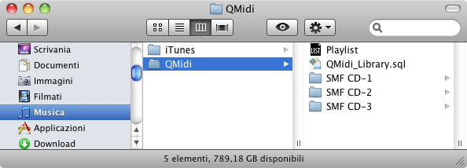
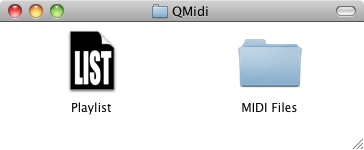

Se si prevede di utilizzare la libreria di QMidi oppure i documenti playlist per organizzare i propri file multimediali, si dovrebbero seguire alcune regole per evitare possibile errori del tipo "file non trovato", dopo il trasferimento dei dati su un altro computer o disco. Poiché libreria e playlist contengono riferimenti ("alias") ai file, è molto importante mantenere la posizione relativa tra i file e la libreria/playlist quando si spostano/copiano.
Il procedimento consigliato per creare una playlist è:
Il database della libreria "QMidi_Library.sql" viene registrato nella cartella "(Home)/Musica/QMidi" e non dev'essere spostato affinché QMidi possa trovarlo. Questa posizione è quindi adatta ad essere utilizzata come cartella radice, che potrà essere spostata da un account (computer) ad un altro.

La libreria può naturalmente contenere riferimenti a file che si trovano in altre cartelle, come quella di iTunes o la cartella Filmati: non è necessario spostarli all'interno della cartella di QMidi. E' importante tenere a mente che si dovra trasferire tutti i dati senza cambiare la posizione relativa tra i vari elementi. Se tutti i file multimediali si trovano nella cartella home, si potrà utilizzare l'applicazione "Assistente Migrazione" per trasferire i dati da un computer all'altro.
Come spiegato nella sezione "Posizione dei file", si possono aggiungere alla libreria/playlist dei riferimenti a documenti che sono situati nella libreria di iTunes. Tuttavia, la seguente funzione di iTunes può causare dei problemi:
Quando, all'interno di iTunes, si modificano i tag Artista, Album o numero traccia/disco di un file, questi verrà spostato/rinominato, ignorando i file collegati (testo, immagine o midi). QMidi fa del suo meglio per informare l'utente quando questo avviene, ma la cosa migliore da fare è disabilitare questa funzione.
NB: Si possono importare playlist/selezioni da iTunes semplicemente trascinandole sulla barra laterale della libreria.
Se si è seguita la logica illustrata nelle sezione "Posizione dei file", la gerarchia dei file dovrebbe essere simile a questa:

Prima di spostare/copiare la cartella radice "QMidi" si devono aggiornare le playlist che contiene: per farlo bisogna tenere premuto il tasto opzione durante l'apertura della playlist. Questa operazione è simile alla funzione "Consolida documenti" di iTunes.
Dopo di che si potrà spostare l'intera cartella "QMidi" su un altro computer/disco con i riferimenti relativi della playlist aggiornati. Si dovrebbe infine ripetere questa operazione di "consolidamento" sulla playlist copiata.
NB: Poiché QMidi registra le informazioni di sincronizzazione nella "resource fork" dei file di testo, questi possono essere salvati solo su dischi in formato HFS (Mac).
La stessa logica viene usata qui: prima e dopo un'operazione di trasferimento si devono aggiornare i riferimenti della libreria. Questo viene fatto tenendo premuto il tasto opzione all'avvio di QMidi.
Poiché la posizione del database della libreria è obbligata, non è normalmente possibile condividere una libreria tra i vari utenti del computer.
Si può comunque farlo in questo modo (per utenti avanzati):
Come detto prima, se la libreria si riferisce a file multimediali al di fuori della cartella condivisa "QMidi", sarà necessario mantenere le posizioni relative durante il trasferimento verso un altro computer. Buona fortuna!